En vivo Fútbol · NBA · Tenis · NHL · F1
Cinco deportes.
Un solo marcador.
Partidos, tablas y fichas de La Liga, Premier League, NBA, Roland Garros, NHL y Fórmula 1 en una web rápida, accesible y sin anuncios.
Marcadores y tablas de APIs públicas (ESPN y Jolpica) cuando responden; si no, datos de demostración marcados como tales.
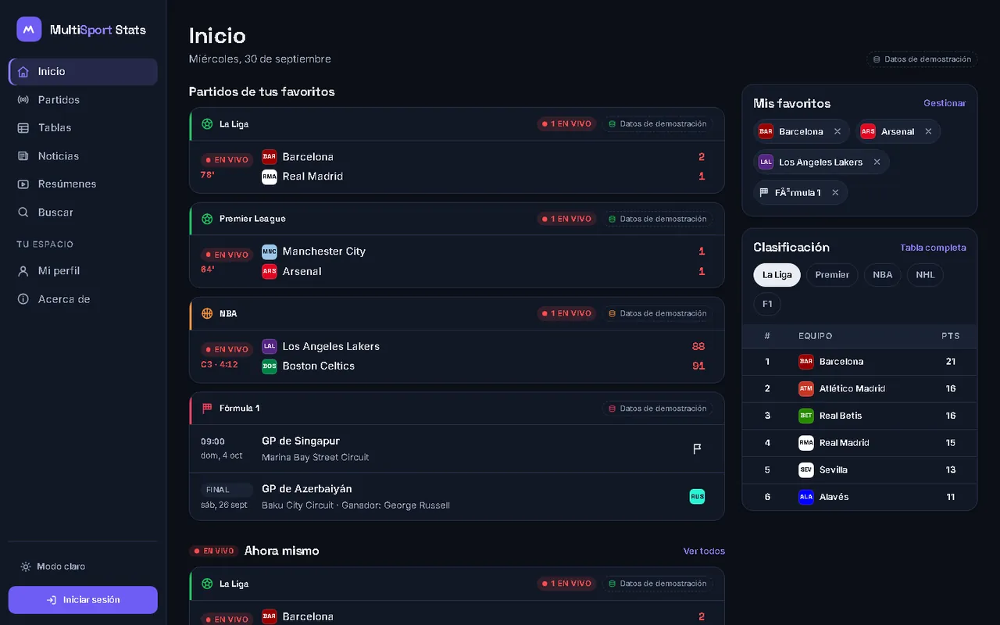
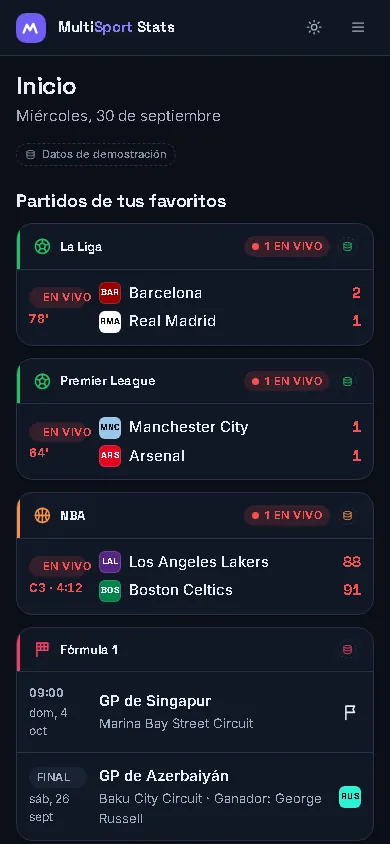
Cobertura
Seis competiciones, cada una con su color.
El mismo acento te acompaña en filtros, tablas y fichas, así sabes de un vistazo qué estás mirando.
- Fútbol La Liga Marcadores y tabla · ESPN
- Fútbol Premier League Marcadores y tabla · ESPN
- Baloncesto NBA Marcadores y conferencias · ESPN
- Tenis Roland Garros Cuadro final · demostración
- Hockey NHL Marcadores y tabla · ESPN
- Motor Fórmula 1 Pilotos y carreras · Jolpica
- Deportes
- 5
- Equipos y deportistas
- 133
- APIs públicas, sin clave
- 2
- Anuncios
- 0
Funciones
Lo que necesitas un domingo de partidos.
Cada tarjeta es una captura real del sitio. Pulsa para abrir esa sección.
Partidos en vivo, próximos y resultados
Filtra por deporte y por estado, busca un equipo y comparte la vista: los filtros viajan en la URL.
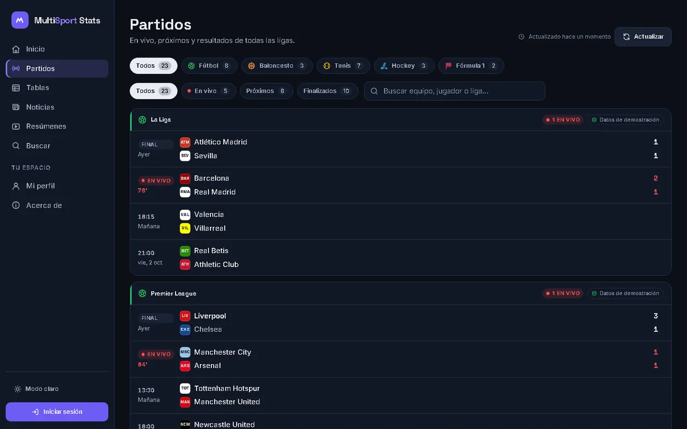
Tablas ordenables
Ordena por puntos, goles o racha. Zonas europeas y de descenso, y filtro por conferencia en NBA y NHL.
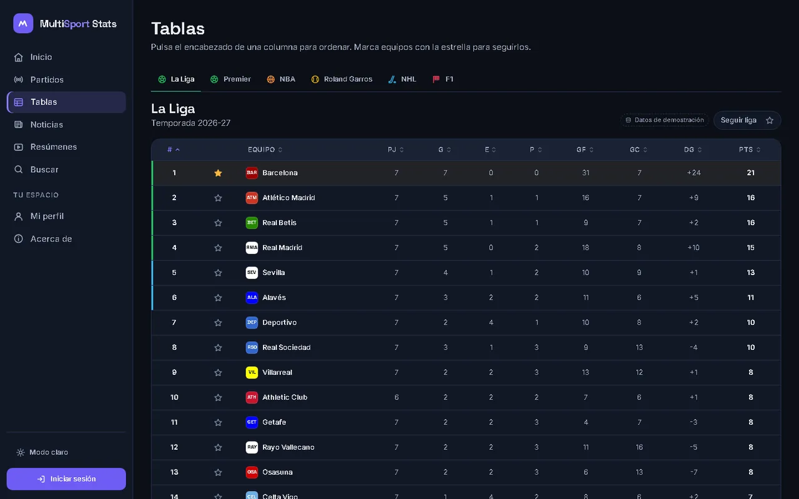
Ficha de partido
Cronología, estadísticas y, en F1, resultados de carrera.
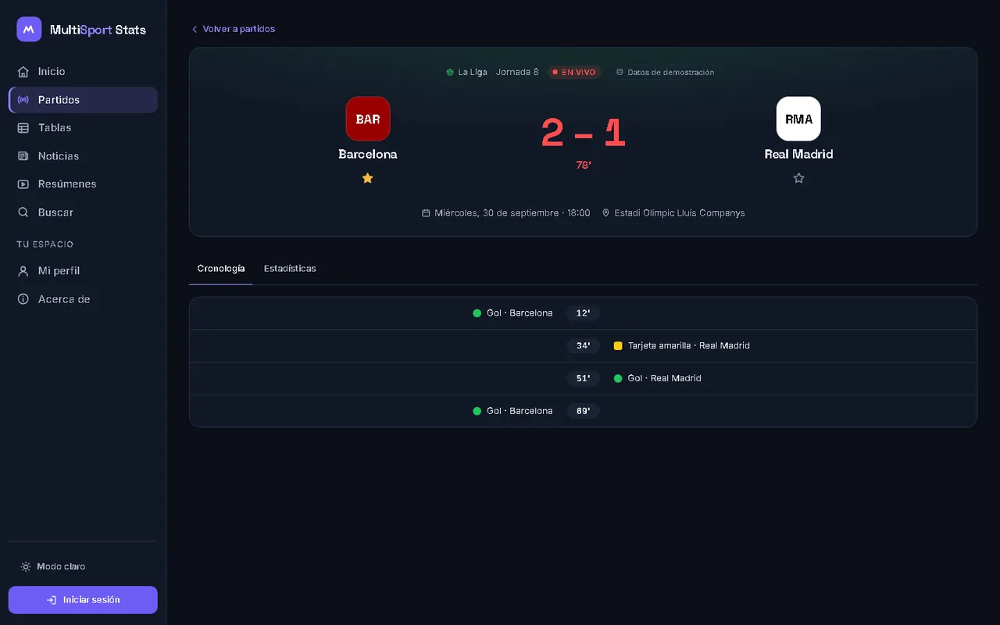
Pensada para el móvil
Menú lateral que se pliega y tablas que se desplazan sin romper la página.
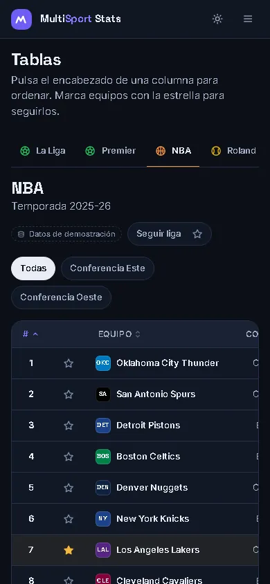
Favoritos
Marca equipos, pilotos o ligas y verás sus partidos primero.
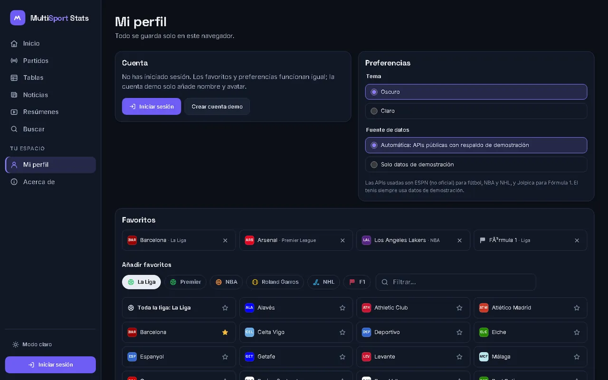
Búsqueda
Equipos, deportistas, partidos y noticias desde una sola caja.
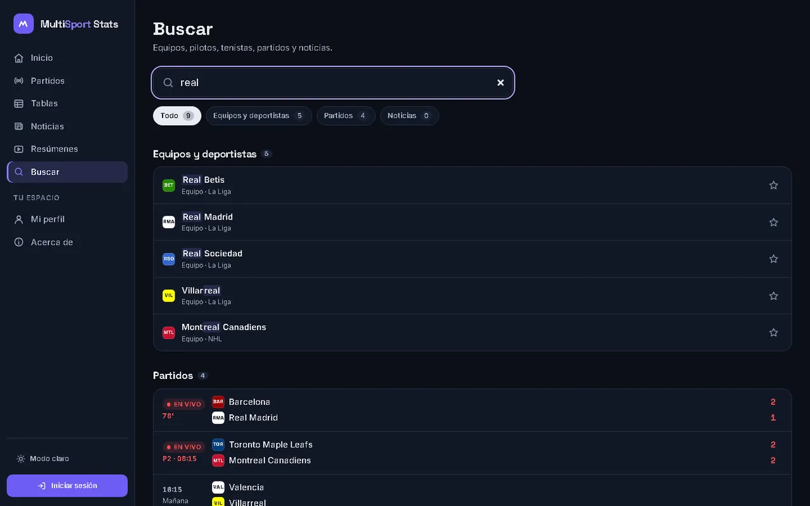
Noticias
Guías por deporte con filtro y búsqueda. Son artículos de demostración.
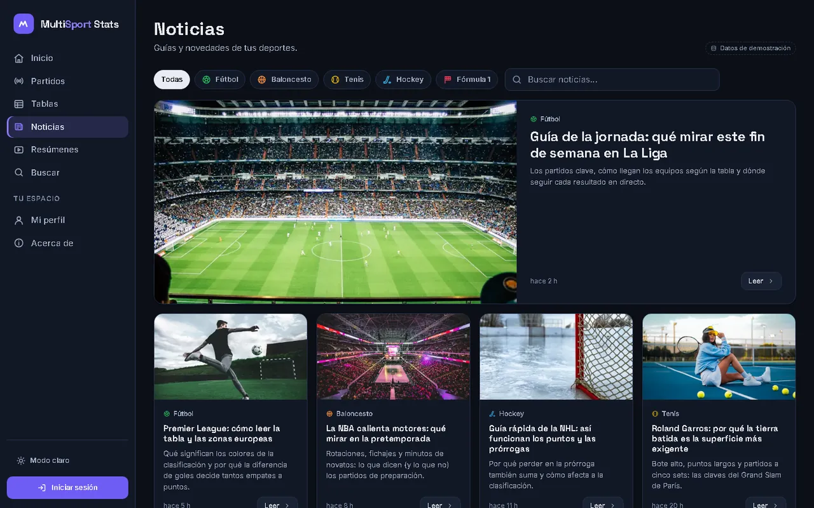
Resúmenes
Cada partido terminado enlaza a la búsqueda de su resumen en YouTube.
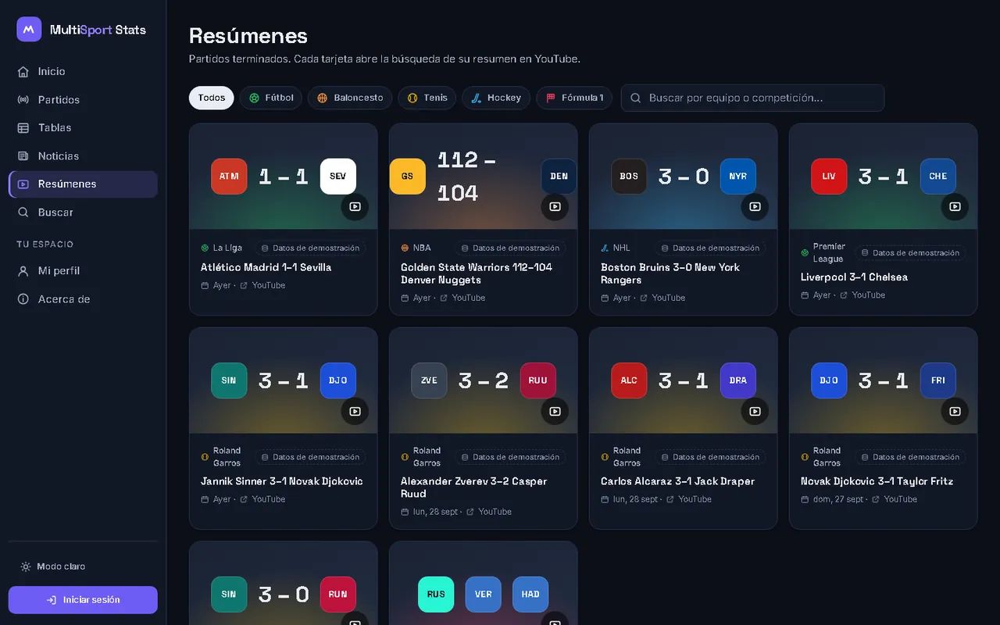
Oscuro por defecto, claro cuando quieras
El tema se guarda en tu navegador y se aplica también en esta portada.
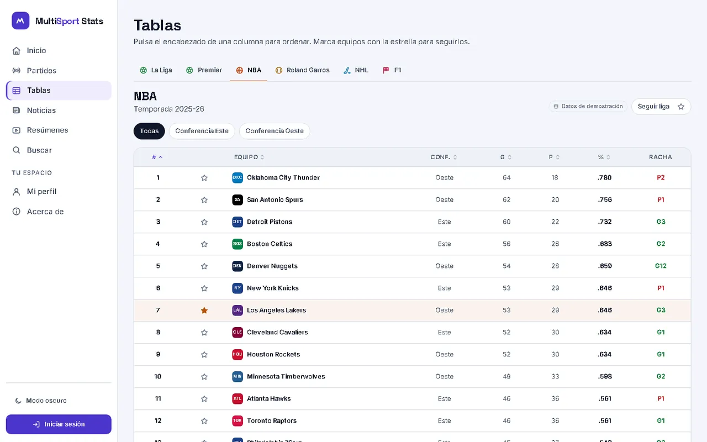
En vivo
Noventa minutos en un scroll.
- 12' Gol · Barcelona
- 34' Tarjeta amarilla · Real Madrid
- 51' Gol · Real Madrid
- 69' Gol · Barcelona
Partido de ejemplo con los datos de demostración del sitio.
-
Próximo
Antes del pitido
El partido aparece en «Próximos» con su hora local y el día: hoy, mañana o la fecha.
-
En vivo
Empieza a rodar
Pasa a «En vivo» con el minuto al lado. En La Liga, Premier League, NBA y NHL los marcadores llegan de la API pública de ESPN.
-
Gol
El marcador parpadea
Con datos reales, la página se actualiza sola cada minuto mientras haya partidos en vivo. Cuando cambia un marcador, el número destella para que no se te escape.
-
Cronología
Cada jugada, en su minuto
La ficha del partido ordena goles, tarjetas y cambios, y compara las estadísticas de los dos equipos.
-
Final
Y después, el resumen
El resultado queda en «Finalizados» y en «Resúmenes», con un enlace directo a buscar el vídeo.
Ver partidos
Capturas
Así se ve, pantalla a pantalla.
-
Inicio
-
Partidos · filtro Baloncesto · modo claro
-
Ficha de partido · móvil
-
Ficha de partido
-
Tablas · La Liga
-
Tablas · móvil
-
Resúmenes
-
Buscar
-
Noticias
-
Mi perfil
Capturas tomadas con los datos de demostración para mostrar todos los estados.
El marcador está esperando.
Sin registro obligatorio: tus favoritos y tu tema se guardan en este navegador.
Entrar